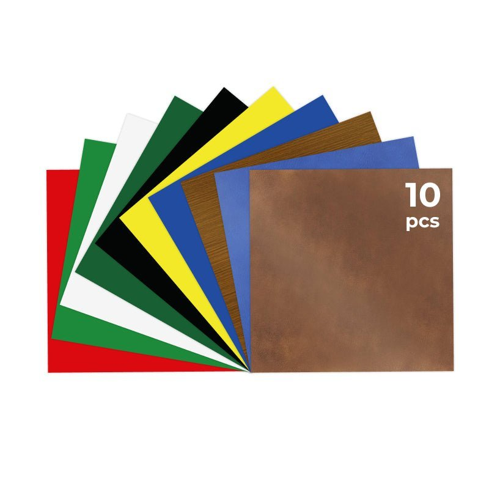
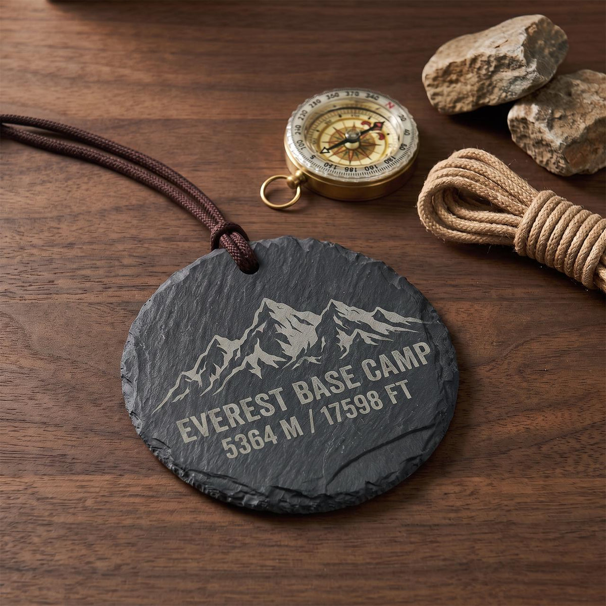

Laser Cutting & Engraving Project Ideas
Explore seven laser project guides: craft studios, personalized gifts, QR code signs, home decor, jewelry, gift packaging, and photo engraving.
Project guides
- Use Cases
Studio & Crafts
Build repeatable craft collections, client samples, and small batches with material tests, reusable fixtures, and clear quality checks.
Read guide → - Use Cases
Personalized Gifts
Make engraved name tags, keepsakes, and small gift sets with legible artwork, confirmed personalization, and a consistent finish.
Read guide → - Use Cases
QR Code Signs
Create QR code signs for menus, product pages, and events with a working destination, readable contrast, and real scan tests.
Read guide → - Use Cases
Home Decor
Plan layered wall art, coasters, decorative panels, and ornaments with material selection, joinery tests, and practical finishing checks.
Read guide → - Use Cases
Jewelry
Design earrings, pendants, charms, and display cards with useful test pieces for weight, hole placement, edge finish, and hardware fit.
Read guide → - Use Cases
Gift Packaging
Prototype gift boxes, presentation inserts, sleeves, and tags with measured fits, simple assembly, and repeatable layouts.
Read guide → - Use Cases
Photo Engraving
Prepare portraits, pet photos, and keepsake plaques with careful cropping, small test engravings, and material-specific contrast checks.
Read guide →
Studio & Crafts
Build repeatable craft collections, client samples, and small batches with material tests, reusable fixtures, and clear quality checks.
- Branded leather labels
- Wood inlay samples
- Acrylic charms
- Paper product tags
Prepare your project
Begin with one approved sample that records the artwork revision, material batch, dimensions, finish, and hardware. Ask the client to approve spelling and placement at the actual finished size. A repeat order should start from that record, rather than a photo of an earlier piece.
Check the finished piece
Review the first, middle, and last pieces in a batch. Check edges, small text, dimensions, and assembly against the approved sample. Account for finishing and rework when deciding how many pieces to make.
Open the studio & crafts guide
Personalized Gifts
Make engraved name tags, keepsakes, and small gift sets with legible artwork, confirmed personalization, and a consistent finish.
- Named wooden keepsakes
- Leather luggage tags
- Engraved coasters
- Anniversary photo plaques
Prepare your project
Confirm the exact name, date, punctuation, and message before preparing the file. View the design at the size it will appear on the object. Keep essential text away from holes, edges, handles, and heavily textured areas.
Check the finished piece
Check every personalized item against the order, not against memory. Inspect readability after cleaning. Include any material-specific care information and check that packaging does not rub the engraved face.
Open the personalized gifts guide
QR Code Signs
Create QR code signs for menus, product pages, and events with a working destination, readable contrast, and real scan tests.
- Countertop menu signs
- Event information plaques
- Product care cards
- Small business display signs
Prepare your project
Decide where the code will lead and verify that page before engraving. Keep the URL short where possible. Retain the quiet zone around the code and avoid stretching it, rounding its modules, or placing decoration inside it.
Check the finished piece
Scan the finished sign on several phones at the intended distance and under realistic lighting. Test again after cleaning, sealing, and mounting. Keep a text URL or another route to the destination when that helps visitors.
Open the qr code signs guide
Home Decor
Plan layered wall art, coasters, decorative panels, and ornaments with material selection, joinery tests, and practical finishing checks.
- Layered wall art
- Engraved coaster sets
- Seasonal ornaments
- Decorative box panels
Prepare your project
Choose the scale, mounting method, and viewing distance before drawing details. Fine bridges that look good on screen can be fragile at the finished size. Prototype one section before committing to a large sheet.
Check the finished piece
Inspect edges and check that small parts are secure. Match the finish to the intended environment. Decorative laser-cut panels are not automatically suitable as structural, electrical, food-contact, or heat-resistant components.
Open the home decor guide
Jewelry
Design earrings, pendants, charms, and display cards with useful test pieces for weight, hole placement, edge finish, and hardware fit.
- Wood earrings
- Compatible acrylic pendants
- Engraved wooden charms
- Jewelry display cards
Prepare your project
Start with a shape that has enough material around the hardware hole. Compare the size and weight with an existing comfortable piece. Thin bridges and engraved details should be checked at full scale before nesting a batch.
Check the finished piece
Flex the sample gently at vulnerable areas and inspect for cracks around holes. Use suitable jewelry findings and finishes, and check the supplier's information for skin-contact components. Verify a matched pair after assembly, not just after cutting.
Open the jewelry guideGift Packaging
Prototype gift boxes, presentation inserts, sleeves, and tags with measured fits, simple assembly, and repeatable layouts.
- Wood presentation boxes
- Cardboard inserts
- Branded hang tags
- Invitation sleeves
Prepare your project
Measure the item and leave space for wrapping, hardware, and removal. Choose whether the package is a visual presentation piece or must protect an item during delivery. Those are different acceptance tests.
Check the finished piece
Assemble the full package and check access to the item, closing force, sharp edges, and any residue. Validate transport protection separately. Do not describe a decorative prototype as shipping protection without suitable testing.
Open the gift packaging guidePhoto Engraving
Prepare portraits, pet photos, and keepsake plaques with careful cropping, small test engravings, and material-specific contrast checks.
- Family photo plaques
- Pet portrait keepsakes
- Engraved wood portraits
- Small commemorative panels
Prepare your project
Use a sharp original photo with useful detail around the eyes, hair, and subject outline. Crop for the final object before resizing. Simplify a distracting background and keep important features away from hardware or edges.
Check the finished piece
Inspect from the normal viewing distance after cleaning. Avoid increasing resolution beyond what the material can resolve. Get approval for the final crop and contrast before engraving a valuable or irreplaceable item.
Open the photo engraving guide
Project overview
| Use case | Project ideas |
|---|---|
| Studio & Crafts | Branded leather labels, Wood inlay samples, Acrylic charms, Paper product tags |
| Personalized Gifts | Named wooden keepsakes, Leather luggage tags, Engraved coasters, Anniversary photo plaques |
| QR Code Signs | Countertop menu signs, Event information plaques, Product care cards, Small business display signs |
| Home Decor | Layered wall art, Engraved coaster sets, Seasonal ornaments, Decorative box panels |
| Jewelry | Wood earrings, Compatible acrylic pendants, Engraved wooden charms, Jewelry display cards |
| Gift Packaging | Wood presentation boxes, Cardboard inserts, Branded hang tags, Invitation sleeves |
| Photo Engraving | Family photo plaques, Pet portrait keepsakes, Engraved wood portraits, Small commemorative panels |
Find your TOOCAA
Compare NOVA and L2
TOOCAA NOVA
For home projects and everyday making. An enclosed laser with a built-in camera and autofocus to help you position and prepare your designs.
Explore NOVA
TOOCAA L2
For a dedicated craft workspace and repeat orders. A larger working area and a choice of laser modules for cutting and engraving projects.
Explore L2Frequently asked questions
Which project should I try first?
Choose a small design on documented stock, such as a simple wood name tag or coaster. Test the material and inspect focus, placement, and edge quality before making a batch.
Need a hand?
Get help with your machine, material, or project.